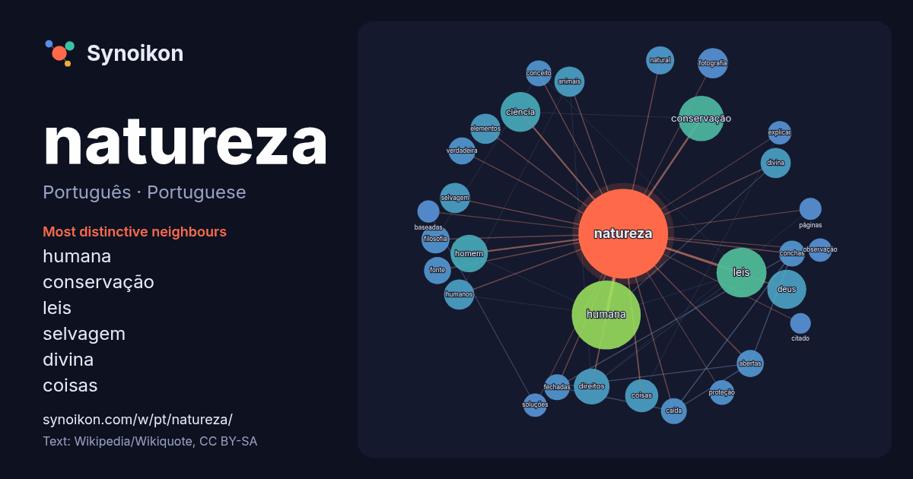

Português · Portuguese · popular word
natureza
“nature” · The words found around it in 1120 instances from Portuguese Wikipedia, Wikiquote.

Most distinctive neighbours
- humana 56×
- conservação 28×
- leis 18×
- selvagem 15×
- divina 15×
- coisas 15×
- ciência 14×
- deus 14×
- homem 13×
- fotografia 13×
- caída 12×
- verdadeira 11×
- conchas 11×
- fechadas 11×
- animais 11×
- abertas 10×
- filosofia 9.9×
- explicar 9.1×
- soluções 9.0×
- elementos 9.0×
× = how many times more often than in general Portuguese Wikipedia text.
Most frequent neighbours
- humana 78
- leis 41
- conservação 34
- ciência 26
- deus 25
- homem 23
- direitos 21
- coisas 18
- animais 15
- divina 15
- elementos 15
- fotografia 15
- humanos 15
- livro 15
- mundo 15
- selvagem 15
- possui 14
- filosofia 13
- natural 13
- abertas 12
In context
- Nota: Para outros significados, veja Natureza (desambiguação). Natureza é um caráter ou constituição inerente, particularmente da ecosfera ou do universo Wikipedia snippets · Natureza
- natureza imóvel e com representação de objetos imóveis no século XVIII. O Commons possui uma categoria com imagens e outros ficheiros sobre Natureza-morta Wikipedia snippets · Natureza-morta
- invariante da natureza humana, mas que o progresso é possível na história através da compreensão mais completa da natureza. Eles conceberam que a natureza humana Wikipedia snippets · Natureza humana
- internacional dedicada a promover a proteção da natureza. No entanto, havia desacordo entre esses governos quanto à natureza da nova instituição, que poderia ou não Wikipedia snippets · União Internacional para a Conservação da Natureza
- Mãe Natureza é uma representação da Natureza que trata da fertilidade, dos ciclos e do cultivo simbolizados na mãe. Imagens de uma mulher representativa Wikipedia snippets · Mãe Natureza
- O culto à natureza é qualquer prática de variedade religiosa, espiritual e devocional que foca na adoração de deidades da natureza consideradas estarem Wikipedia snippets · Culto à natureza
- da Natureza é um conceito religioso e filosófico originário da Idade Média Latina que explora a relação entre religião e ciência, que vê a natureza como Wikipedia snippets · Livro da Natureza
- o materialismo histórico e dialético aplicado à natureza. Uma "lei" proposta na Dialética da Natureza é: "A lei da transformação da quantidade em qualidade Wikipedia snippets · Dialética da Natureza
More Portuguese words
- arte
- ciência
- clima
- comida
- coração
- cão
- deus
- dinheiro
- família
- força
- gato
- história
- língua
- morte
- ouro
- ponte
- saúde
- trabalho
- trem
- verdade
- vida
- água
Precomputed on 2026-10-09 with default settings (±5 words, medium corpus). The interactive map can refresh it with live data.